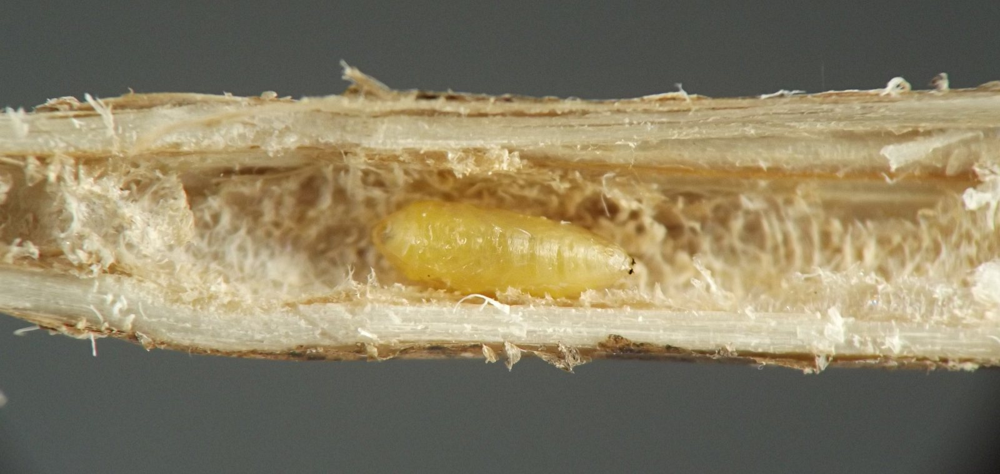
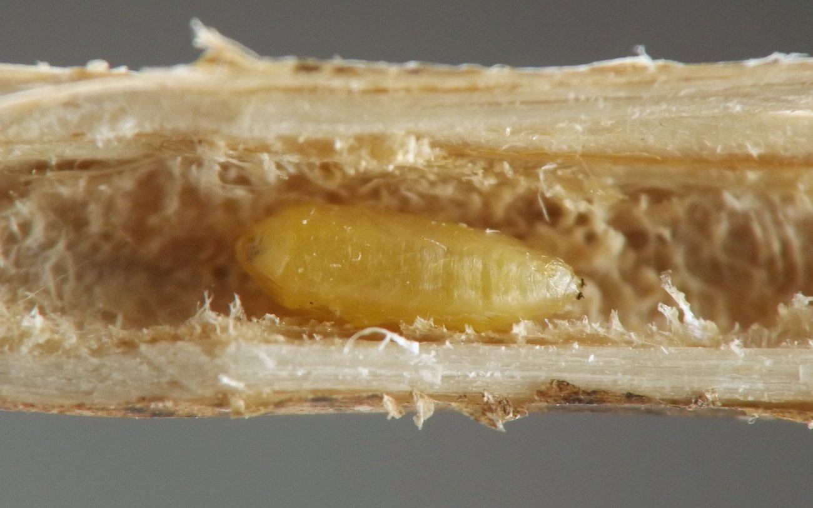
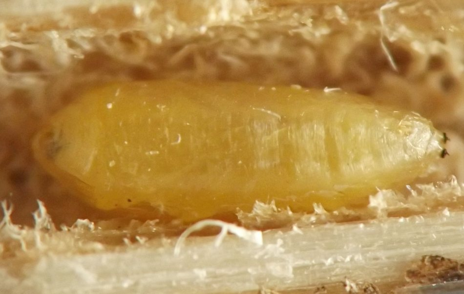
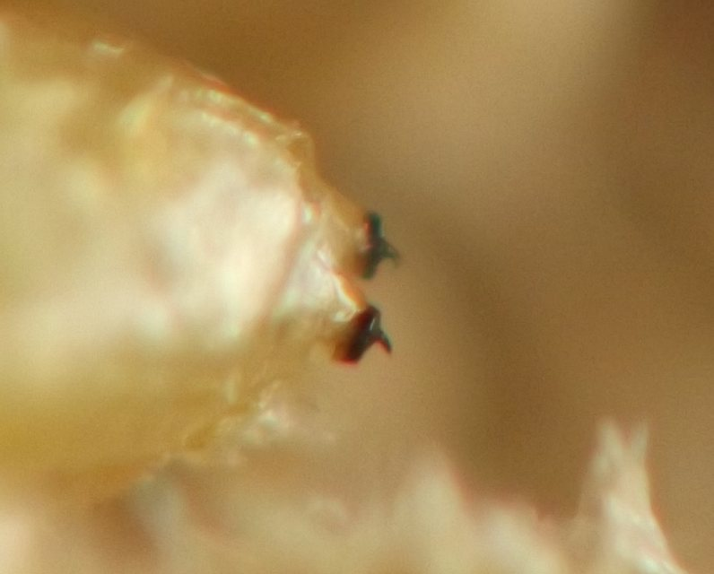
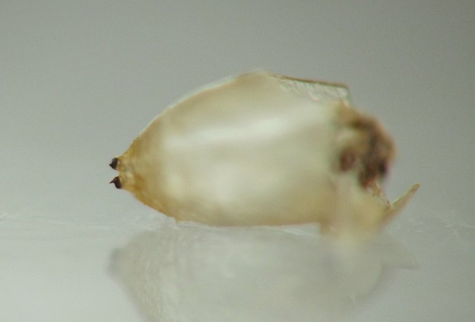
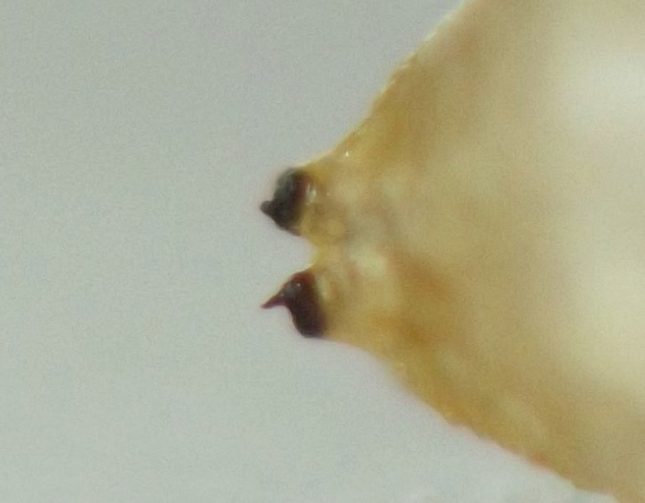
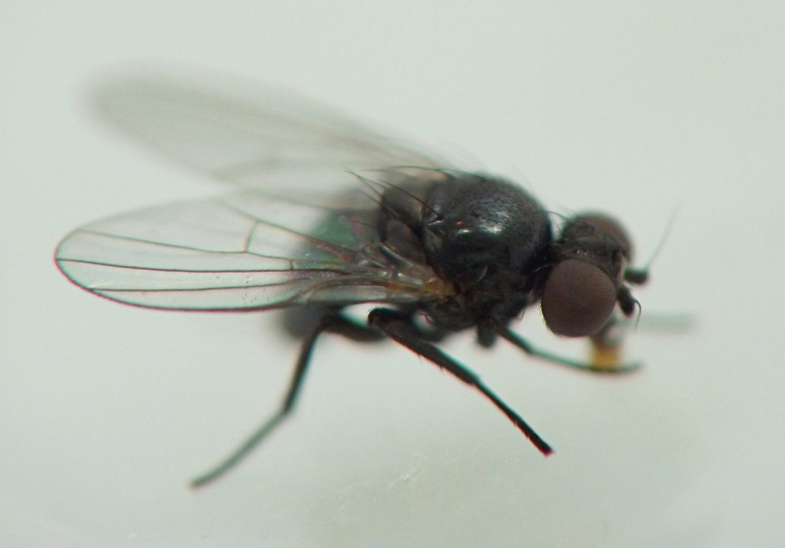
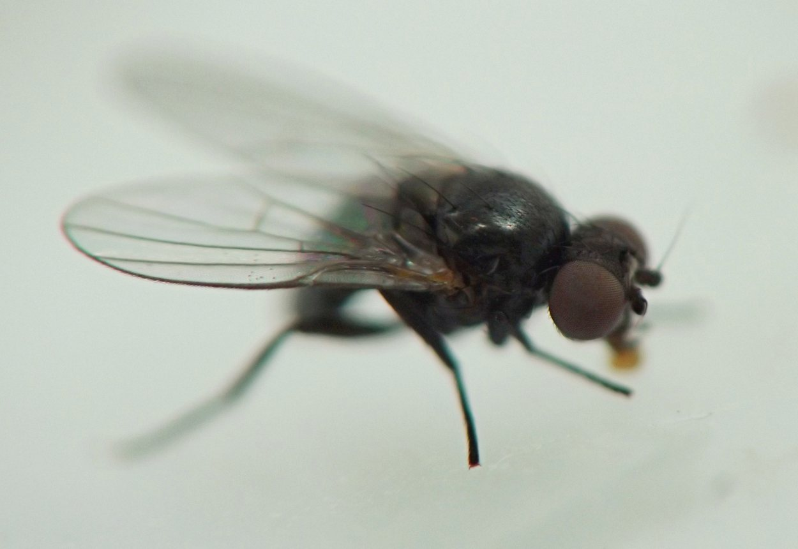
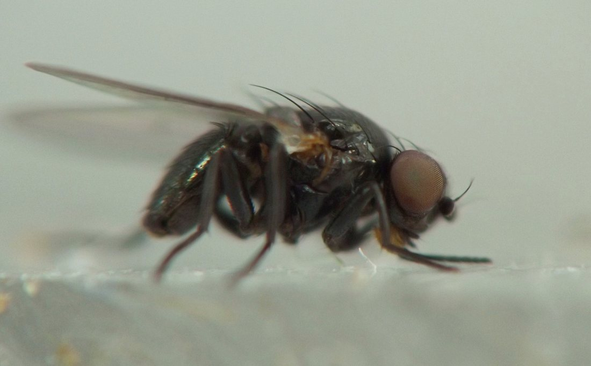
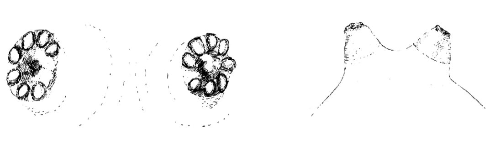

Stem borer (Diptera: Agromyzidae) in Ambrosia
| Record no.: | 0040 |
|---|---|
| Feeding guild: | Stem borer |
| Taxonomy: | Diptera: Agromyzidae: Melanagromyza |
| Stages observed: | trace, larva, puparium, adult |
| Distribution observed: | IA |
| Hosts in Ambrosia: | A. trifida (giant ragweed) |
I observed a puparium approximately 12 cm above ground level in a tunnel in the interior of a short-statured, small-diameter stem of giant ragweed (stem thickness ~8mm at base) that had grown along a trail in an upland woods, not far from the woodland edge and a crop field. The tunnel was typical for Agromyzidae, narrow with ragged walls and no significant solid frass accumulation. The posterior spiracular discs of the puparium were black in color and separated by approximately 1.5 times their diameter, and they possessed horns that were distinctly curved. I successfully overwintered the puparium, and an adult emerged the following spring.
Additionally, I reared an adult from the stem of a side branch of giant ragweed collected in winter. The same side branch stem also contained a mordellid larva (record 0045) and approximately 12-15 cecidomyiid larvae (record 0667). The posterior spiracular discs of the puparium from the side branch were also black in color, but they were separated by a distance approximately equal to their diameter, and the spiracular horns appeared to be straight rather than curved.
Melanagromyza splendida has been previously documented from Ambrosia artemisiifolia (Stegmaier 1971, Spencer and Steyskal 1986), but the latter authors report that the horns on the posterior spiracular plates of the M. splendida puparium are "rudimentary", and figs. 69 and 70 in their paper show that the horns are barely visible, in contrast to the horns on the puparia I found in A. trifida.

 Prev
Prev



















- Spencer, K.A., and G.C. Steyskal. 1986. Manual of the Agromyzidae (Díptera) of the United States. U.S. Dept. of Agriculture, Agriculture Handbook No. 638.[return to in-text citation]
- Stegmaier, C.E. 1971. Lepidoptera, Diptera, and Hymenoptera associated with Ambrosia artemisiifolia (Compositae) in Florida. Florida Entomologist 54(3): 259-272.[return to in-text citation]
Page created: February 10, 2026. Last update: October 16, 2026